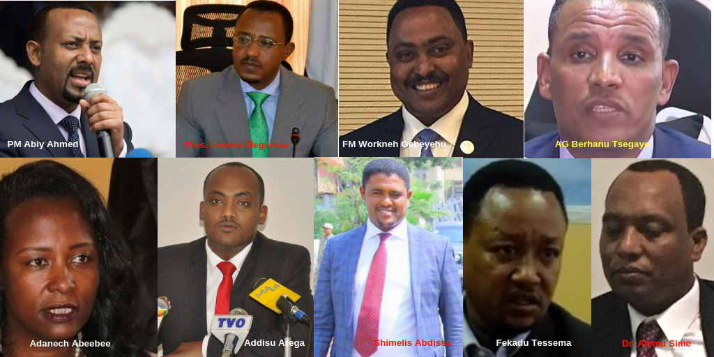

By Meskerem Abera
በሃገራችን በሁለት የከተማ አስተዳደሮች እና በአስር ክልሎች ተከፋፍላ ትተዳደራለች፡፡ ከአስሩ ክልሎች ውስጥ ከኦሮሚያ ክልል በቀር ዘጠኙ ክልሎች ከሞላ ጎደል አንፃራዊ ሰላም ውስጥ የሚገኙ ናቸው፡፡ ሆኖም እነዚህ ዘጠኝ ክልሎችም አለፍ አለፍ ብሎ የፀጥታ መደፍረስ፣ ዘውግ ተኮር ግጭት፣ የባለስልጣናትን ሞት የጨመረ ፖለቲካዊ ምስቅልቅል ውስጥ ገብተው ያውቃሉ፤ ወደፊትም እንዲህ ያለ ነገር ሊገጥማቸው ይችላል፡፡ ክልሎቹ የገጠማቸውን ፈተና ጠቅልሎ ማጥፋት አይቻልምና በአጭር ጊዜ ውስጥ ችግሩ እንዲቃለል ግን አደርገዋል፡፡ ይህ የሆነው በዋናነት በክልሎቹ አመራሮች ኢትዮጵያን የማዳን ቁርጠኝነት ነው፡፡ እነዚህ ክልሎች ኢትዮጵያን ለማዳን የሚሰሩት የዘውጋቸው ሰው “ስልጣን በቃኝ” እስከሚል ዙፋን ላይ ተቀምጦ ስለኖረ ወይም የህዝባቸው ጥያቄም ሙሉ በሙሉ ስለተመለሰ አለያም በክልላቸው ሁሉ ሙሉ ሁሉ ዝግጁ ስለሆነ አይደለም፤ ‘ከሁሉም የሃገር ህልውና ይቅደም’ በማለት እንጅ!
በሃገራችን ካሉ ክልሎች የኦሮሚያ ክልል በልዩ ሁኔታ መረጋጋት የሌለባት፣ ሰላም የራቃት በግዛቷ ለመኖር ቀርቶ በትራንስፖርት አልፎ ለመሄድ የምታሰጋ ሆናለች፡፡ በኦሮሚያ ክልል የሚታየው አለመረጋጋት እያደር እየተባባሰ ክልሉን አስፈሪ ቀጠና እያደረገው መጥቷል፡፡ ኦሮሚያ ክልል በተለይ “መጤ” ለተባለው የህብረተሰብ ክፍል እጅግ አስጊና አስፈሪ ክልል ነው፡፡ይህ ምን ቢሸፋፍኑት ሽፋን ገልጦ የሚከሰት ሃቅ ነው፡፡ በኦሮሚያ ክልል ሰው እንደ ዶሮ ታርዶ ተበልቷል፡፡ እናት አምጣ የወለደችው የሰው ፍጡር የዘጠኝ ወር እርጉዝ ላይ መጨከን ሆኖለት ድርስ እርጉዝ በአሰቃቂ ሁኔታ ህይወቷ አልፏል፤ ወልዶ ሊስም የጓጓው አባት እርጉዝ ሚስቱን አጥቶ፣ ወላጅ የሌላቸው ህፃናትን ታቅፎ ቀርቷል፡፡ በኦሮሚያ የተደረገው ዘግናኝ ድርጊት ተወርቶ አያልቅም፡፡
የዚህ ፅሁፍ ዓላማም በኦሮሚያ የሆነውን መዘርዘር አይደለም፡፡ የፅሁፉ ዓላማ ይህን ሁሉ መዓት በኦሮሚያ ያመጣው ምንድን ነው የሚለውን ከአመራሩ አንፃር መመርመር ነው፡፡ ህግ የማያከብሩ “ህግ አስከባሪዎች” የኦሮሞ ዘውገኝነት ፖለቲካ በትክክል ማንሳት ያለበትን ጥያቄ አንግቦ ከመታገሉ ጎን ለጎን እውነቱንም ውሸቱንም እያደባለቀ ቂምን ለወጣቱ ሲመግብ የኖረ ነው፡፡ በጉልምስና እድሜያቸው ለወጣቱ እልህን፣ ቂምን እና ጥላቻን ሲሰብኩ የኖሩ የኦሮሞ ብሄርተኝት ፖለቲከኞች በስተርጅና ለዘብ ያለ ፖለቲካን እናራምድ ቢሉም ሰሚ አላገኙም፡፡ የተዘራ ነገር ይበቅል ዘንድ ግድ ነው፡፡ መጠንቀቅ ሲዘሩ ነው፤ የዘሩት እንክርዳድ በቅሎ ማዘርዘር ሲጀምር ‘ስንዴ ሁን’ ቢሉት አይሆንም፡፡ በኦሮሚያ እየሆነ ያለው ይህ ነው!
የኦሮሞ ብሄርተኝት ፖለቲካ ግንዱ ኦነግ እንደሆነ እሙን ነው፡፡ ኦፌኮ ይባል ኦህዴድ፣ ኦዴግ ይባል ኦህኮ ተሸምኖ የተሰራው በኦነግ እሳቤ ነው፡፡ ሆኖም በህወሃት ቤት ያደገው ኦህዴድ የዋናውን የኦነግን አስተምሮ ጨርሶ ባይረሳም ኦነግን እድሜ ብቻ ያደረገውን ስህተቱን አርሞ ስልጣን ላይ ለመውጣት ችሏል፡፡ ኦህዴድ ስሙን ቀያይሮ ከኦዴፓ እስከ ኦሮሚያ ብልፅግና የደረሰ ቢሆንም ሁሉንም አይነት የኦሮሞ ብሄርተኝት መንፈሶች የያዘ ነው፡፡ በኦሮሚያ ብልፅግና ውስጥ ኦነግን በልቡ፣ ኦሮሚያ ብልፅግናን በልብሱ ይዞ የሚጓዘው ብዙ እንደሆነ በርካታ ምልክቶች አሉ፡፡ ሆኖም የሚያዛልቀው መንገድ ሁሉንም እኩል የምታደርግ ኢትዮጵያ እውን እንድትሆን መስራት እንደሆነ ከልባቸው አጥብቀው የሚያምኑ፣ በዚሁም የተነሳ ብዙ ዋጋ የከፈሉ የኦሮሚያ ብልፅግና መሪዎች እንዳሉ የታወቀ ነገር ነው፡፡ ሃገራችን አሁን ያለችበት ተስፋ ሰጭ ጉዞ እውን እንዲሆን የእነዚህ አስተዋይ የኦሮሞ አመራሮች ሚና ጉልህ ነው፡፡ እነዚህ ሰዎች ጉልበታቸው ደርጅቶ የተመኟት ለሁሉም የምትሆን ኢትዮጵያ እውን እንድትሆን፣ ድካማቸው ስምረት እንዲያገኝ ምኞቴ ቢሆንም የእነዚህ እውነተኛ የእኩልነት ታጋዮች ቁጥር ምን ያህል በቂ ነው የሚለው እጅጉን የሚያሳስብ ነገር ነው፡፡ ወረድ ብየ የማነሳው የኦሮሚያ ብልፅግና መሪዎች ህፀፅም እነዚህን መሪዎች የማይመለከት እንደሆነ ላሳውቅ እወዳለሁ፡፡ ለነዚህኞቹ እንደውም አድናቆት አለኝ፤ የከረረውን የኦሮሞ ፖለቲካ ለማለዘብ በሚደክሙት ድካም ውስጥ ህይወት ጭምር ሊያስከፍል የሚችል አደጋ አዝለው እንደሚንቀሳቀሱ በደንብ እረዳለሁ፡፡

አንድ ድርጅት ስሙን ሲቀይር መንፈሱን ለመቀየሩ ጅማሬ ሊሆን ይችላል እንጅ አብሮት የጎለመሰ መንፈሱን በስም ቅያሬ አለቅልቆ እንደማይደፋው ግልፅ ነው፡፡ ይህ በኦሮሚያ ብልፅግና መሪዎች ዘንድ በእጅጉ ይስተዋላል፡፡ ከስማቸው ጋር ያልተቀየረው መንፈሳቸው የሚያናገራቸውን እና የሚያሰራቸውን ለተከታተለ እየተመላለሱ የሚደሰኩሩትን የህግ የበላይነት የማስከበር መሃላ የጎሪጥ እንዲያየው የሚያስገድድ ነው፡፡ የህግ የበላይነትን ለማስከበር መጀመሪያ የህግ የበላይነትን ፅንሰ-ሃሳብ በትክክክለ መገንዘብ ያስፈልጋል፡፡ የህግ የበላይነት ከአላዋቂነት፣ ከድንፋታ፣ ከፕሮፖጋንዳ፣ ከርካሽ ተወዳጅነት ጋር ህብረት የለውም፡፡ የህግ የበላይነት ለማስከበር ሚዛናዊ ጭንቅላት፣ በአቋም መፅናት ከሁሉም በላይ ህግ አላከበረም ከሚባለው ተራው የህብረተሰብ ክፍል የተሻለ ማንነት ያስፈልጋል፡፡ የህግ የበላይነትን ለማስከበር ውስጥን እና ውጭን፣ አፍንና ልብን አንድ ማድረግ ያሻል፡፡
ሞገደኛ ሆኖ ሞገደኛን በህግ ማረቅ አይቻልም፡፡ በOBN መደንፋት በOMN ከመደንፋት የተለየ አለመሆኑን ማወቅ ያስፈልጋል፡፡ በኦሮሚያ ክልል የሚታየው ምስቅልቅል መነሻው ከአክራሪው የኦሮሞ ብሄርተኝት ክንፍ የሚነሳ ጥፋት ብቻ አይደለም፡፡ይልቅስ ለዘብተኛ ነኝ የሚለው የኦሮሚያ ብልፅግና ፓርቲ መሪዎችም ከንግግር እስከ ድርጊታቸው ለዚህ ምስቅልቅል ያልተናነሰ ሚና አላቸው፡፡ እነዚህ መሪዎች ስልጣንን የመሰለ ስክነት የሚፈልግ ክቡር ነገር በእጃቸው ይዘው አክራሪነቱ ከስልጣን ደጀሰላም ካራቀው የኦሮሞ ብሄርተኝት ክንፍ ጋር የአክራሪነት ውድድር ውስጥ ይገባሉ፤ አንዳንዴም ከዚሁ ቡድን ጋር ማህበር መጠጣት ያሰኛቸዋል፡፡ ከዚሁ አክራሪ ቡድን ጋር ያላቸው አንድነት ልዩነትም ግር እስከሚል ድረስ “በአንድ ቅል እንጠጣ” የሚሉበት ጊዜም አለ፡፡አክራሪነቱ እነሱ ያገኙትን ኢትዮጵያን የምታክል ትልቅ ሃገር የመምራት እድል ያሳጣውን አክራሪ ቡድን የዓይናችን ብሌን ነው እስከማለት ደርሰዋል፡፡ የኦሮሚያ ብልፅግና ፓርቲ መሪዎች ከፅንፈኛው የኦሮሞ ክንፍ ጋር ያላቸው መስተጋብር፣ አንዳንዴ የሚናገሩት ንግግር፣ የሚያደርጉት ድርጊት ለታዛቢ “እውነተኛ አቋማቸው እውን ለሁሉም ኢትዮጵያዊ የምትሆን ኢትዮጵያን መመስረት ነው ወይ?” የሚለውን ጥርጣሬ ላይ የሚከት ነው፡፡ በግሌ የኦህዴድ ባለስልጣናት ኢህአዴግን በብልፅግና ፓርቲ ለመተካት በተኬደው ወሳኝ ምዕራፍ ላይ ያሳዩትን ሃገር የማዳን ቁርጠኝነት በአድናቆት ካየሁ በኋላ የሃገራችን ፖለቲካ የተሻለ መስመር እንደሚይዝ ትልቅ ተስፋ አድርጌ ነበር፡፡ ሆኖም የኦሮሚያ ክልልን የሚመሩ የኦሮሚያ ብልፅግና መሪዎች ከዛ ወዲህ የሚያደርጓቸውን አንድንድ ነገሮች ሳጤን አካሄዳቸውን በጥርጣሬ ለማየት ተገድጃለሁ። የሚያወሩትን የህግ የበላይነት ማስከበርስ የሚችሉ ናቸው ወይ የሚለውም ሌላው ወሳኝ ጥያቄ ነው፡፡ “የኦሮሚያ ክልልን የሚመሩ የብልፅግና ፓርቲ መሪዎች የሚሉትን የህግ የበላይነት ለማስፈን የሚበቁ ናቸው ወይ?” የሚለውን ጉዳይ እጅግ በጥያቄ ውስጥ እንዲከት ያደረጉኝን መሪዎቹ በተለያየ ሰዓት በየሚዲያው የሚያንፀባርቋቸውን ከህግ የበላይነት ጋር በእጅጉ የሚጣሉ ነጥቦች ላንሳ፡፡
“ኦሮሞ ኦሮሞን አይገድልም” “ከዚህ በኋላ ኦሮሞ ኦሮሞን አይገድልም” የሚለውን ንግግር በሃገራችን የህወሃትን አድራጊ ፈጣሪነት ያስወገደው ለውጥ ከመጣበት ዘመን ጀምሮ ኦሮሚያን በሚያስተዳድሩ ባልስልጣናት አፍ በየሚዲያው የሚደጋገም መፈክር ነው፡፡ ይህ ንግግር ከህግ የበላይነት ጋር ብቻ ሳይሆን ከሰብዓዊነትና ከሰብዓዊ መብት እሳቤዎች ጋር የተጣላ እጅግ ኋላ ቀር አባባል ነው፡፡ ህጋዊነት እና የህግ የበላይነት እሳቤዎች የሚደነግጉት ማንም ሰው ሰውን መግደል እንደማይችልም እንደሌለበትም ነው፡፡ በእነዚህ ባለስልጣናት ንግግር መሰረት ግን ነውር የሚሆነው ኦሮሞ ኦሮሞን ሲገድል ነው፡፡ ይህ ጥንቃቄ የጎደለው፣ በዘውገኝት ላይ የቆመ ስሜታዊ ንግግር በርካታ ክፍተቶችን የሚተው ነው፡፡ ኦሮሞ ኦሮሞን አይገድልም ሲባል የሰማ የክልሉ ፀጥታ አስከባሪ ኦሮሞ ሌላውን ሲገድል ምን ማድረግ እንዳለበት እጅግም አይጨነቅም፡፡ ጭራሽም በኦሮሚያ ክልል ሌላ የተባለውን መግደል ችግር ላይመስለውም ይችላል፡፡ ግፋ ካለም መለዮውን አውልቆ ከገዳዮች አንዱ እስከመሆን ሊደርስ ይችላል፡፡ ይሄው የፀጥታ አስከባሪ በሌላ ወገን ደግሞ ኦሮሞ እና እስልምና አይነጣጠሉም ሲባልም የሚሰማ ነው፡፡ ስለዚህ በኦሮሚያ ክልል ያለ ክርስቲያን መገደሉ ኦሮሞ ኦሮሞን አይገድልም የሚለውን መርህ የጣሰ ስለማይመስለው እያየ እየሰማ ዝም ሊል ይችላል፡፡
ኦሮሞ ኦሮሞን አይገድልም የሚለው የፀጥታ አስከባሪው ጋር ሲደርስ ኦሮሞ ኦሮሞን ወንጀል ሲሰራ አይቶም ወደ ህግ ቦታ አይወስድም ገመና ይሸፍናል እንጅ የሚል ትርጉም ሊሰጥም ይችላል፡፡ የዚህ ሁሉ ድምር ውጤት ከሰሞኑ በኦሮሚያ በማታ ቀርቶ በቀን በብርሃን የሰው ልጅ በግፍ ሲገደል፣ተወልዶ ባደገበት ሃገር በማንነቱ ዘር ማጥፋት ሲደረግበት የህግ አካላት ዝም ብለው ማየታቸው ነው፡፡ ተጎጅዎቹ መንግስት አለወይ? ብለው የሚጠይቁትም ይህንኑ መጠቆማቸው ነው፡፡ የህግ አካላት ለገዳዮች መንገድ መርተው ዞር ሲሉ፣ የሰው ልጅ እንደ ከብት ሲታረድ ቆመው እያዩ ዝም እንዳሉ የመሰከሩ ተጎጅዎችም አሉ፡፡
“ዲና ነፍጠኛ” በቅርቡ በኦሮሚያ ክልል የታየው የዘር ማጥፋት መሪ ቃል “ዲና ነፍጠኛ” (ጠላት ነፍጠኛ እንደማለት) የሚለው ነው፡፡ ሰው በቢለዋ ሲታረድ፣ ድንጋይ ተንተርሶ አይኑ ተጎልጉሎ ሲወጣ፣ የሰው ልጅ ሰውነት እንደ ቲማቲም እስኪፈራርስ ድረስ በአጣና ተቀጥቅቶ ሲገደል ከገዳዮች አፍ በህብረት የሚወጣው ቃል “ዲና ነፍጠኛ” የሚለው ነው፡፡ ይህ አሰቃቂ የዘር ማጥፋት ድርጊት በኦሮሚያ ክልል ከመከሰቱ ጥቂት ወራት በፊት ክልሉን የሚመሩት አቶ ሽመልስ አብዲሳ ስንት ሽህ ህዝብ በተሰበሰበበት የኢሬቻ በዓል አከባበር ላይ “ሲያዋርደን የኖረውን ነፍጠኛን ሰብረናል” ሲሉ በባለስልጣን አዋቂነትና ብስለት ሳይሆን በመደዴ ድንፋታ፣ እጅግ ግዴለሽነትና አላዋቂነት በተጫነው እብሪት ተናግረዋል፡፡ አንድ ወንጀል ያዘለ ንግግር በንግግርነቱ ባያስጠይቅ እንኳን ንግግሩን ተከትሎ፣ በንግግሩ ምክንያት ተጨባጭ ጥፋት ከመጣ ግን ተናጋሪው መጠየቁ ግድ ነው፡፡ በኦሮሚያ ከሰሞኑ የተደረገው የዘር ማጥፋት ማጀቢያ ሙዚቃ “ዲና ነፍጠኛ” የሚል ነው፡፡ ገዳዮቹ ይህን እያሉ ሰው ሲገድሉ ክልላቸውን በሚመራው ሰውየ አንደበት “ትናንት ሲሰብራችሁ ነበር” የተባሉትን ነፍጠኛን በሜንጫ፣ በአጣና፣ በድንጋይ እየሰባበሩ ነው:: ይህ ወንጀል ከአቶ ሽመልስ ንግግር ጋር ቀጥተኛ ግንኙነት ያለው በመሆኑ በሃገራችን ህግ ኖሮ፣ ሰዎች ሁሉ በህግ ፊት እኩል ቢሆኑ ኖሮ ሰውየው በOMN አደገኛ ቅስቀሳ አደረጉ ከተባሉ ሌሎች ሰዎች እኩል መጠየቅ ነበረቸው፡፡ እሳቸው ግን ጭራሽ የሕግ የበላይነት ጠበቃ ሆነው ትዕግስትም ልክ እንዳለው፣ አሁን የህግ የበላይነት ዘመን እንደሆነ በቴሌቭዝን ሊደሰኩሩ መጡ! ዋል አደር ብለው ደግሞ፣ በዚህ ሳምንት OBN በተባለ ሚድያ ሌላ ህገ-ወጥነት ሊዘሩ፣ ሌላ መተላለቅ ሊቆሰቁሱ ብቅ አሉ፡፡ የፈለጉትን ተናግረው ስልጣን ላይ ጉብ ማለቱን ለምደውታል-ንጉስ እንደሆነ አይከሰስ!
“ዲና ነፍጠኛ” በቅርቡ በኦሮሚያ ክልል የታየው የዘር ማጥፋት መሪ ቃል “ዲና ነፍጠኛ” (ጠላት ነፍጠኛ እንደማለት) የሚለው ነው፡፡ ሰው በቢለዋ ሲታረድ፣ ድንጋይ ተንተርሶ አይኑ ተጎልጉሎ ሲወጣ፣ የሰው ልጅ ሰውነት እንደ ቲማቲም እስኪፈራርስ ድረስ በአጣና ተቀጥቅቶ ሲገደል ከገዳዮች አፍ በህብረት የሚወጣው ቃል “ዲና ነፍጠኛ” የሚለው ነው፡፡ ይህ አሰቃቂ የዘር ማጥፋት ድርጊት በኦሮሚያ ክልል ከመከሰቱ ጥቂት ወራት በፊት ክልሉን የሚመሩት አቶ ሽመልስ አብዲሳ ስንት ሽህ ህዝብ በተሰበሰበበት የኢሬቻ በዓል አከባበር ላይ “ሲያዋርደን የኖረውን ነፍጠኛን ሰብረናል” ሲሉ በባለስልጣን አዋቂነትና ብስለት ሳይሆን በመደዴ ድንፋታ፣ እጅግ ግዴለሽነትና አላዋቂነት በተጫነው እብሪት ተናግረዋል፡፡ አንድ ወንጀል ያዘለ ንግግር በንግግርነቱ ባያስጠይቅ እንኳን ንግግሩን ተከትሎ፣ በንግግሩ ምክንያት ተጨባጭ ጥፋት ከመጣ ግን ተናጋሪው መጠየቁ ግድ ነው፡፡ በኦሮሚያ ከሰሞኑ የተደረገው የዘር ማጥፋት ማጀቢያ ሙዚቃ “ዲና ነፍጠኛ” የሚል ነው፡፡ ገዳዮቹ ይህን እያሉ ሰው ሲገድሉ ክልላቸውን በሚመራው ሰውየ አንደበት “ትናንት ሲሰብራችሁ ነበር” የተባሉትን ነፍጠኛን በሜንጫ፣ በአጣና፣ በድንጋይ እየሰባበሩ ነው:: ይህ ወንጀል ከአቶ ሽመልስ ንግግር ጋር ቀጥተኛ ግንኙነት ያለው በመሆኑ በሃገራችን ህግ ኖሮ፣ ሰዎች ሁሉ በህግ ፊት እኩል ቢሆኑ ኖሮ ሰውየው በOMN አደገኛ ቅስቀሳ አደረጉ ከተባሉ ሌሎች ሰዎች እኩል መጠየቅ ነበረቸው፡፡ እሳቸው ግን ጭራሽ የሕግ የበላይነት ጠበቃ ሆነው ትዕግስትም ልክ እንዳለው፣ አሁን የህግ የበላይነት ዘመን እንደሆነ በቴሌቭዝን ሊደሰኩሩ መጡ! ዋል አደር ብለው ደግሞ፣ በዚህ ሳምንት OBN በተባለ ሚድያ ሌላ ህገ-ወጥነት ሊዘሩ፣ ሌላ መተላለቅ ሊቆሰቁሱ ብቅ አሉ፡፡ የፈለጉትን ተናግረው ስልጣን ላይ ጉብ ማለቱን ለምደውታል-ንጉስ እንደሆነ አይከሰስ!
የኦሮሚያ ብልፅግና መሪዎች በክልላቸው የተከናወነውን የዘር ማጥፋት ወንጀል የሚክዱት በሶስት ዋነኛ ምክንያት ነው፡፡ አንደኛውና ዋነኛው በዘር ማጥፋቱ ሂደት ክርስቲያን ኦሮሞዎችም አብረው ስለተገደሉ በኦሮሞ ብሄርተኝነት ፖለቲካ ውስጥ ሙስሊም- ክርስቲያን የሚል ክፍፍል እንዳይመጣ በመስጋት ነው፡፡ ሁለተኛው የክልሉ ስም ዘር ማጥፋትን በመሰለ መጥፎ ወንጀል እንዳይነሳ ገመና ለመክተት ነው፡፡ክልሉ በዓለም አቀፍ ደረጃ በእጅጉ የሚወገዘው የዘር ማጥፋት የተከናወነበት ነው ከተባለ ቱሪስቱም፣ ኢንቨስተሩም ይሸሻልና ገመና መክተቱ ተመራጭ ነው፡፡ ሶስተኛው ምክንያት ድርጊቱ የዘር ማጥፋት ከሆነ መንግስት ይህን ባለመከላከል መጠየቁ ስለማይቀር ከተጠያቂነት ለመሸሽ ነው፡፡ ሲጠቃለል በኦሮሚያ ክልል የሚከሰተው አለመረጋጋት ክልሉን የሚመሩ አብዛኛዎቹ መሪዎች የኖሩበትን በተበድየ ተረክ፣ በመጤ ጠልነት የበለፀገ አክራሪ ዘውገኝነት ትተው በህግ የበላይነት እና በዲሞክራሲያዊ መርሆች ለመምራት ቁርጠኝነቱም ፣ ፍላጎቱም፣ ችሎታውም የሚያጥራቸው በመሆኑ ነው፡፡ በዚህ ላይ የሚደረበው ችግር ደግሞ እውነተኛውን የአክራሪ ዘውገኝነት፣ መጤ ጠልነታቸውን በአዲስ የአብሮነት አስተሳሰብ የተኩ እንደሆኑ ለማስመሰል መሞከራቸው ነው፡፡ ማስመሰሉ ያስፈለገው ስልጣን ላይ ለመሰንበት ነው፡፡ ስልጣን በኢትዮጵያ የሁሉ ነገር ምንጭ ነው፡፡ የኑሮን እንቆቅልሽ ለመፍታት፣ ከሰው በላይ ሆኖ ለመኖር፣ አዋቂ ለመምሰል፣ ክብር ለማግኘት ሁሉ ስልጣን ወሳኝ ነገር ነውና እንደዋዛ የሚተውት አይደለም፡፡ስለዚህ ስልጣን ላይ ተቀምጦ ረባሽም አረጋጊም ለመሆን ይሞከራል፡፡ በዚህ መሃል የደሃ ደም ይፈሳል፤ ሃገርም ደም ታለቅሳለች!